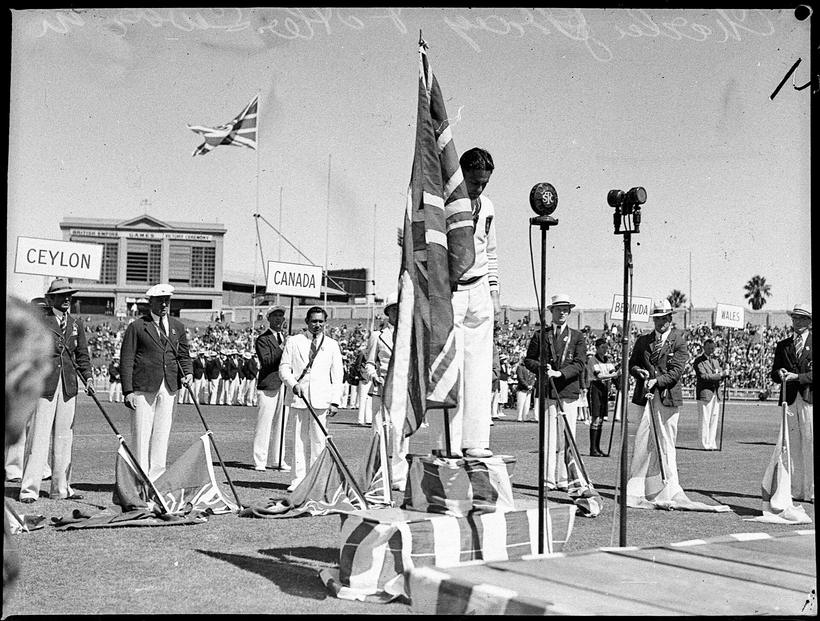
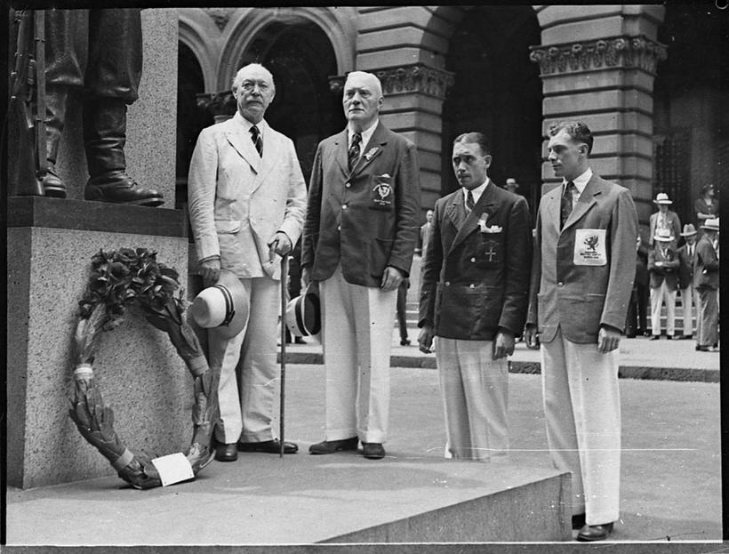
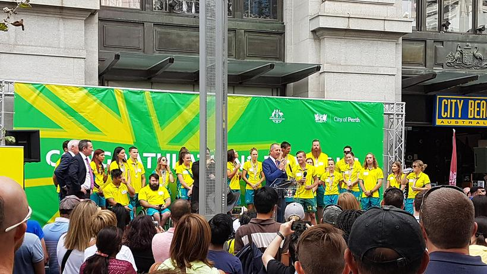
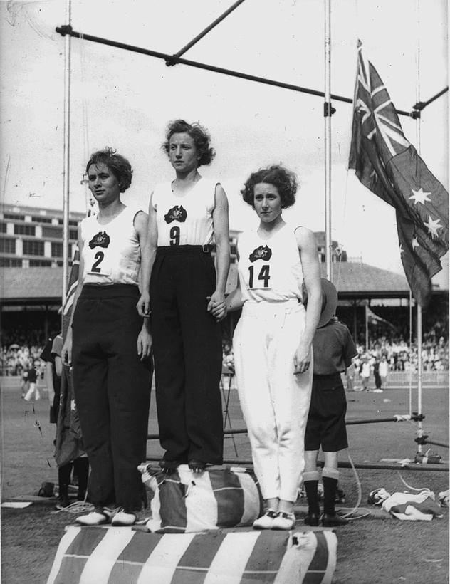
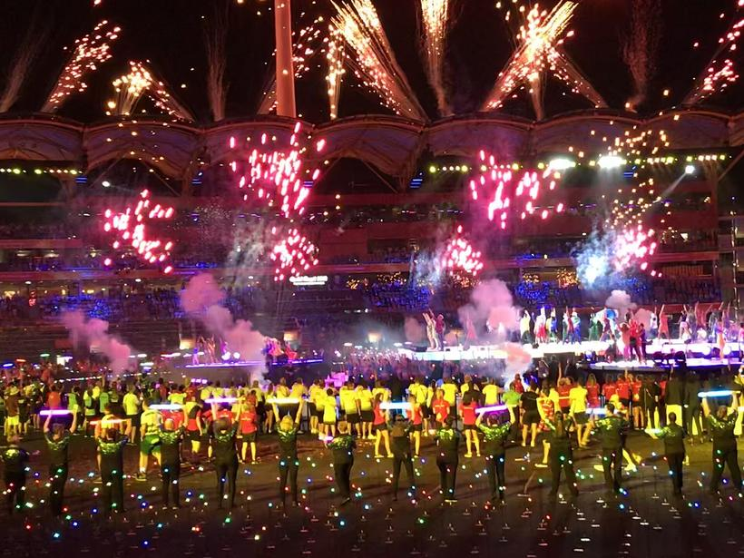
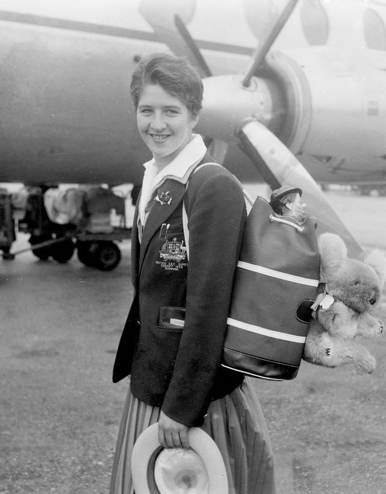
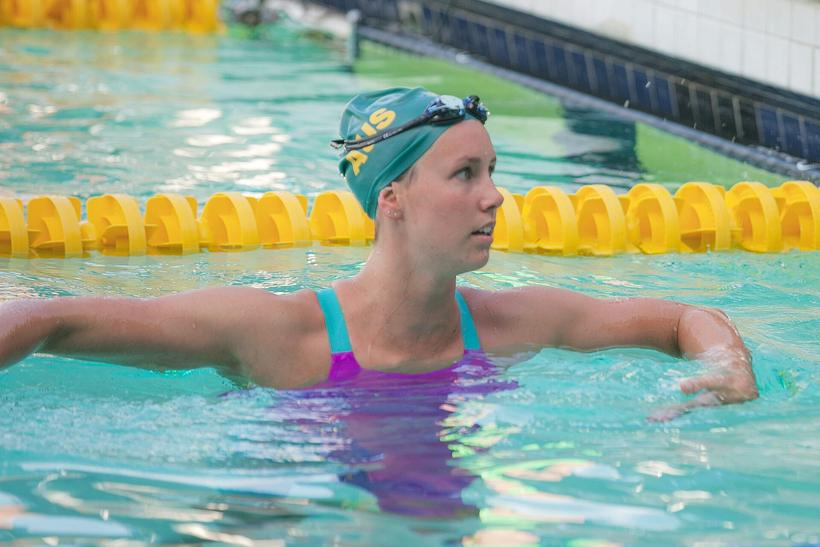
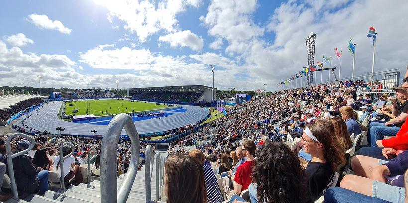

A Games that moves around the world
The first British Empire Games were held in Hamilton, Canada, in 1930. Eleven nations sent about 400 athletes. The Games have since visited seven countries. Every one is a former British colony or part of the United Kingdom, and the UK has hosted eight times.
The Games have also grown. Hamilton held 59 medal events; Manchester 2002 held more than 280. Drag the slider below the map to replay the Games in order, and watch how often the circles turn green.

Australia has topped the table in every host country except Jamaica
Circle area shows the number of medal events. Colour shows which nation topped the medal table: Australia (15 times), England (7) or Canada (once, ). The Zoom to buttons close in on the UK, Australia and New Zealand, or Canada and the Caribbean. Hover a circle for details. Click a Games name with a dashed underline, like Edmonton 1978, to mark that Games on the charts.
The long way there
Only eight of the 23 Games have been held in Australia or New Zealand. For the rest, Australian teams travelled up to 17,000 km, roughly as far from home as a sporting team can go.
The map below traces the shortest route from Canberra to every overseas host. The line chart under it then lays every host city out by distance, so you can see exactly how far each trip was.

Most of Australia's Games travel has been to Britain, on the far side of the world
Line width shows Australian team places, added up over every Games held at each destination (key, bottom left). Host cities in Britain, New Zealand and western Canada are combined into one line each. Each line follows the shortest route over the globe. Labels give how often Australia topped the medal table there. Green dots are the five Australian host cities. Hover a line to isolate it.
Britain: eight Games in six cities
Zooming in on the far end of the biggest line. Circle area shows Australian team places at each city, added up over its Games (key, bottom left). Labels give Australia's place on the medal table; gold means first.
Australia tops the table close to home, less often on the far side of the world
Every host city on one line, from Canberra on the left to the farthest point on Earth from Canberra on the right: 20,015 km away, in the Atlantic Ocean near the Azores. Only the left-to-right position means anything: it is the distance from Canberra, read off the kilometre scale along the bottom. Labels are stacked up and down only so they don't overlap. Familiar trips are marked above the line for scale. Within 15,000 km, Australia finished first on the medal table at 11 of 13 Games. Beyond that mark it managed 4 of 10, and every time it missed out, England won. Most of those far Games were in Britain, England's backyard, and four were before 1970, when Australia was a smaller sporting power. Hover a dot for its distance.

Climbing to the top, and staying there
For its first 60 years the Commonwealth Games was a two-horse race between Australia and England, with Canada close behind. From 1990, Australia pulled clear, and the bump chart shows how rarely it has been caught since. The gap chart then asks whether that lead is just a matter of sending more athletes.

Since 1990, only England has beaten Australia to first place, and only once
Place on the medal table (ranked by golds, then silvers, then bronzes) for the four most successful nations: Australia, England, Canada and New Zealand. The one exception since 1990 was , where England won 58 golds to Australia's 49. Hover a line to isolate a nation.
How to read this bump chart: each line follows one nation from Games to Games. A line at the top means first place; a line that drops means the nation fell down the table.
Australia sends about 1 in 10 athletes but wins about 1 in 4 medals
The Games now award about five times as many medals as in 1930, so raw counts flatter Australia. A fairer test compares Australia's share of the athletes with its share of the medals. Since the 1970s it has sent 8–14% of the athletes but won 17–30% of the medals, usually two to three times its "fair share". Only at the early home Games, when the team swelled, did the gap almost close.
How to read this gap chart: both lines use the same percentage scale, one dot per Games. Grey = Australia's share of all athletes entered; green = Australia's share of all medals. The shaded green gap is the medals Australia won beyond what its team size alone would predict. Gold bands mark Games held in Australia. Hover a dot for the numbers.
No place like home
Australia has hosted five times: Sydney 1938, Perth 1962, Brisbane 1982, Melbourne 2006 and the Gold Coast 2018. Its share of medals at every home Games was higher than at the overseas Games just before. At four of the five it was also higher than at the Games just after.
Home crowds help, but the right-hand chart shows a simpler explanation: the host sends a bigger team. Four of Australia's five home teams were the largest it had ever sent at the time; only (206) fell one short of Perth 1962 (207).

At home, Australia wins a bigger share with a bigger team
● Home Games compared with the overseas Games ◀ before and after ▶. The grey bar spans the three values.
Built in the pool
Australia's biggest medal source by far is the pool, and almost all of that is swimming. Athletics supplies about a fifth of Australia's medals and cycling a tenth. These three sports have been Australia's strengths since the 1950s. Shooting, gymnastics and weightlifting have become steady contributors since the 1970s and 80s.

Only aquatics and athletics have delivered Australian medals at all 23 Games
Australian medals by sport (rows) and Games (columns). Darker green = more medals; numbers mark Games with more than 20. Blank = no Australian medal, often because the sport was not on the programme (notes in grey). The pool's best haul was 84 medals at the Gold Coast in 2018. Hover a cell for the medal breakdown.
Aquatics wins the most medals, but cycling turns the most into gold
Column width = number of medals in that sport. Each column is split into gold, silver and bronze. The dashed line marks Australia's overall gold rate (39%): columns whose gold rises above it convert more of their medals into wins.
The greats
Eleven of Australia's 16 most decorated Commonwealth Games athletes are swimmers. Swimmers can enter many events and relays at one Games, so they collect medals faster than anyone. The exceptions (shooters Phil Adams, Bruce Quick and Lalita Yauhleuskaya, fencer Ivan Lund and gymnast Brennon Dowrick) built their totals over three to five Games.

Emma McKeon won 20 medals in eight years; Phil Adams took 20 years to win 18
Each row is one athlete. The line runs from their first to last medal-winning Games. At each Games the circle's area shows medals won, and the gold centre shows how many were gold.
Are the Games getting easier?
A common complaint is that Australia's dominance is hollow because the world's best no longer bother to turn up. We test it with athletics because it has the lowest barrier to entry of any Games sport: running, jumping and throwing need little more than a track, so nearly every Commonwealth nation competes seriously. Swimming is different, as success there depends on pools and a strong swim culture, which Australia has in abundance. And every athletics result is a time or distance we can compare with the Olympics.
For each individual event since 1970, we compared the Commonwealth Games winner with the Olympic champion two years earlier. We used Olympedia's results for 1968–2024.
Commonwealth champions still perform at about 97% of Olympic champions, as they did in 1970
Each dot is one event. 100% means the Commonwealth winner matched the Olympic champion's mark; 97% means about 3% slower (or shorter). The white line follows the middle (median) event at each Games. Green dots are Australian winners. Use the buttons to show men's or women's events only.
Why percentages? A 100 m sprinter and a javelin thrower can't be compared in seconds and metres, but each can be compared with their own event's Olympic champion. For track events the percentage is inverted, so higher always means better.
About one Commonwealth champion in five would have won an Olympic medal
Each cell is one event at one Games, coloured by what the Commonwealth winner's mark would have earned at the Olympics two years earlier. The rate dipped to its lowest at Melbourne 2006 and Delhi 2010, then peaked at .
But fewer of the Commonwealth's Olympic medallists now win at the Games
Every medal symbol below is one person: a Commonwealth athlete who won an individual Olympic athletics medal. Each row follows one Olympics to the Commonwealth Games two years later. The top row, for example, takes every Commonwealth medallist from Mexico City 1968 and asks whether they also won a medal at Edinburgh 1970. Filled = that Olympic medallist also won a Commonwealth medal; outline = they did not, whether absent, injured or beaten. Read down the rows: below the dashed line, fewer of each row's medals are filled.
The winners aren't getting weaker
For 56 years the typical Commonwealth champion has performed at about 96–98% of the Olympic champion's level, with no downward trend.
…but the biggest stars do skip it more
Half of the Commonwealth's Olympic medallists used to win again at the next Games; now fewer than a third do. The Games still have world-class winners, but fewer of the world's best compete.
Glasgow 2026: smaller Games, bigger slice
Victoria withdrew as host in 2023, so Glasgow stepped in with a cut-down Games: ten sports instead of Birmingham's twenty, and 674 medals instead of 877. Cutting the programme cut many of the sports where Australia is weaker, but kept swimming, athletics, track cycling and gymnastics.
The cuts hit Australia's rivals far harder than Australia, and the second chart then asks whether Australia's haul is as impressive once population is taken into account.

The Games shrank by a quarter; Australia's medal count barely moved
Every medal at the last two Games, one square each. Australia won 21% of medals in Birmingham and 25% in Glasgow; England's share fell from 20% to 16%.
Per person, Australia isn't the champion
Australia won about 6 medals per million people in Glasgow. That places it 19th of the 45 medal-winning nations, behind Wales (9.7), Scotland (7.0), New Zealand (6.8) and a string of small islands. Nauru won two medals with about 12,000 residents; Norfolk Island won a bronze with about 2,000. Darker = more medals per person. The Zoom to buttons close in on the Caribbean, Africa, the British Isles, South Asia or the Pacific, and the Games menu switches to the full-sized Birmingham 2022.
Australia's lead at the Commonwealth Games is real, and it is built on the pool. It is not simply a product of weaker competition. The typical Commonwealth champion is as close to Olympic standard today as in 1970.
What has changed is who turns up. The Games now compete with a crowded global calendar, and fewer of the Commonwealth's Olympic stars take part. The smaller, cheaper Games that began in Glasgow also happen to suit Australia's strengths. If future hosts follow Glasgow's model, expect the green block to keep growing, even if the medals mean a little less than they once did.